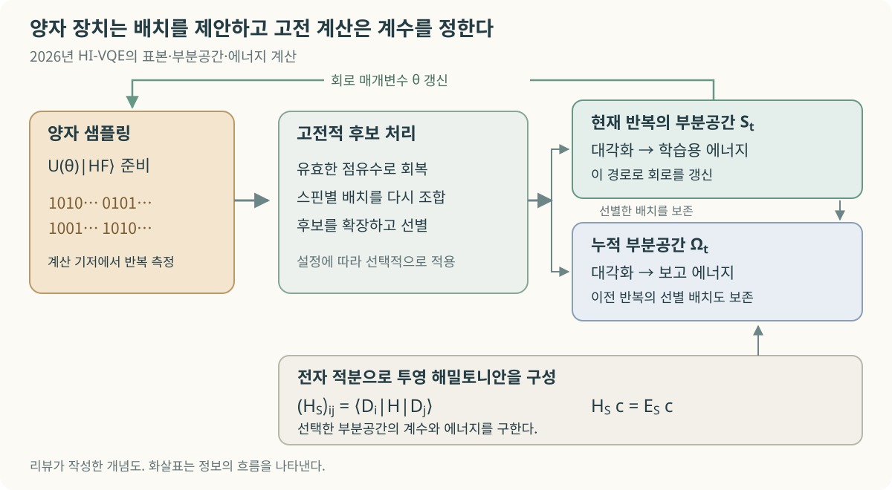
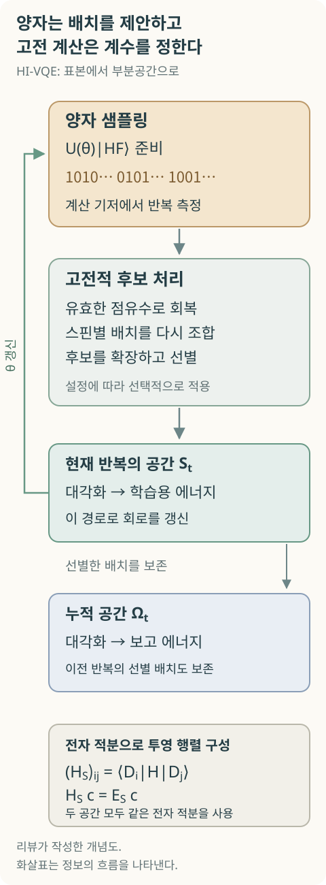
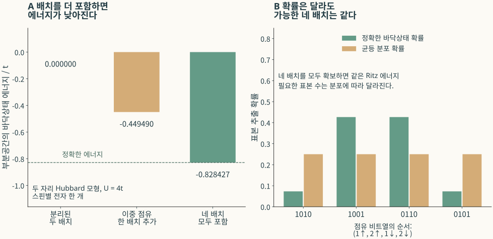
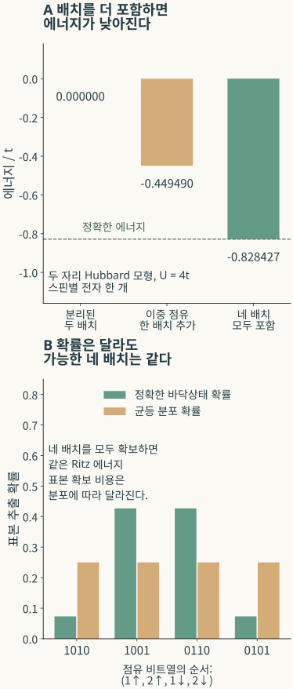

큐노바 HI-VQE와 양자화학의 계산 분업
양자·고전 분업으로 전자구조를 푸는 원리와 산업적 양자 이점의 조건

내용 살펴보기
질소의 삼중결합을 끊는 촉매를 설계하려면, 결합이 늘어날 때 전자가 어떻게 재배치되는지 알아야 한다. 질소 분자의 해리만 계산해도, 전자들이 만드는 파동함수는 한 가지 전자배치로 설명하기 어려워진다. 큐노바의 공식 질소 분자 벤치마크는 활성 전자 14개와 공간 궤도 20개를 다룬다. 특정 스핀 투영값에서 가능한 전자배치만 약 60억 개다. HI-VQE는 그중 약 900만 개를 남겨 에너지를 계산했다. [2]
그 표에는 두 가지 시간이 적혀 있다. 양자 프로세서 사용시간은 258초, 전체 실행시간은 46,547초다. 약 4분 18초와 12시간 56분. 이 간격에는 HI-VQE가 어떤 알고리즘인지 이해할 단서가 있다. 양자 장치는 유용한 전자배치를 제안하고, 고전 컴퓨터는 그 배치들을 조합해 파동함수와 에너지를 계산한다. 어느 쪽이 얼마나 일을 덜어 주는지가 기술의 가치를 결정한다.
공식 명칭은 Handover Iterative Variational Quantum Eigensolver이며, HI-VQE·HiVQE·HIVQE는 같은 계열의 표기다. 원논문은 2025년 공개됐고, 중요한 후속 연구는 2026년 9월 개정판까지 나왔다. 그 배경에는 QunaSys의 QSCI와 IBM의 SQD 등, 양자 장치가 전자배치를 고르고 고전 장치가 부분공간을 푸는 연구 흐름이 있다. 큐노바의 특징은 후보의 생성·축적·선별과 회로 갱신을 반복 절차로 결합한다는 데 있다. [3–5]
전자의 자리를 고르는 것과 파동함수를 푸는 것
공간 궤도는 전자가 차지할 수 있는 공간적 상태를 뜻한다. 각 공간 궤도에 두 스핀 방향을 배정하면, 공간 궤도 L개는 통상 2L개의 스핀 궤도가 된다. 직접 점유수 부호화에서는 각 스핀 궤도의 비어 있음과 차 있음을 큐비트의 0과 1에 대응시킨다. 비트열 하나가 한 전자배치를 나타내며, 이 배치를 반대칭화한 다전자 기저함수가 Slater 행렬식이다.
Nα개와 Nβ개의 전자를 각각의 스핀 궤도에 배치하면 기저의 수는 다음과 같다.
질소 예제에서는 L=20, Nα=Nβ=7이므로 D=6,009,350,400이다. 모든 계수 cᵢ를 한꺼번에 최적화하는 완전 활성공간 계산은 빠르게 커진다. 고전적인 selected configuration interaction(SCI)은 에너지에 중요한 행렬식을 골라 이 부담을 줄여 왔다. QSCI 계열은 이 선택 과정에 양자 샘플을 사용한다. [4]
표준 VQE는 회로가 만든 상태의 에너지 기대값을 측정하고, 이를 낮추도록 회로 매개변수 θ를 바꾼다. HF는 하나의 Slater 행렬식으로 근사한 Hartree–Fock 기준상태이며, H는 선택한 활성공간의 전자 해밀토니안이다. [6]
해밀토니안 H를 여러 Pauli 항으로 나누어 측정하기 때문에, 충분히 작은 통계 오차로 에너지를 읽는 일 자체가 비싸질 수 있다. HI-VQE는 회로에서 계산 기저의 비트열을 반복 측정한다. 고전 프로그램은 유효한 배치의 집합 S를 구성한 다음, 입력된 전자 적분으로 행렬 원소를 계산한다. [3]

최종 계수의 크기와 부호는 이 고전 대각화가 정한다. 회로의 측정 빈도가 최종 파동함수의 확률과 정확히 같을 필요는 없다. 회로는 중요한 배치를 효율적으로 발견하는 데 도움이 되면 된다. 같은 해밀토니안을 정확히 투영하고 충분히 수렴한 대각화를 수행하면 Eₛ≥E₀라는 변분 상한이 성립한다. 상한이라는 사실과 참값에 충분히 가깝다는 사실은 서로 다른 정보다. [4]


2026년 구현은 현재 반복에서 얻은 부분공간을 회로 학습에 쓰고, 여러 반복에서 축적한 부분공간으로 보고 에너지를 계산한다. 현재 반복에서 선별한 행렬식은 앞선 반복에서 보존한 행렬식과 합쳐져 누적공간을 이룬다. 전자수에 맞지 않는 표본의 회복, 스핀별 배치의 조합, 단일·이중 여기의 고전적 생성과 계수에 따른 선별도 포함한다. 따라서 최종 배치 수 전체를 양자 장치가 직접 발견한 배치 수로 읽으면 안 된다. [5]
잡음에 강해지는 이유와 여전히 필요한 표본
고전 프로그램이 정확한 전자 적분으로 Hₛ를 구성하면, 장치의 잡음이 에너지 행렬 원소에 그대로 들어가지는 않는다. 잡음은 어떤 배치가 선택되는지를 바꾼다. 유효한 공간 안에서 변분 원리는 유지되지만, 중요한 배치를 놓치거나 공간이 커져 정확도와 비용이 나빠질 수 있다. 이 방식의 잡음 내성은 양자 오류정정과 구별된다. [4]
확률 p로 나오는 배치를 N번의 독립 측정에서 한 번도 보지 못할 확률은 (1−p)ᴺ이다. 측정 기저를 한 종류로 줄이는 것과 샷을 한 번만 사용하는 것은 전혀 다른 계산이다. 작은 확률의 배치가 중요한 경우에는 샷 수와 중복 표본이 부담으로 남는다. QSCI를 비판적으로 분석한 Reinholdt 등의 연구는 실제 분자 사례에서 이 중복과 고전 선택법의 경쟁력을 지적했다. HI-VQE가 학습하는 분포와 추가적인 고전 확장이 이 문제를 얼마나 개선하는지는 별도의 대조 실험으로 평가할 수 있다. [7]
작은 Hubbard 모형은 배치와 확률의 차이를 선명하게 보여 준다. 두 자리에 스핀별 전자가 하나씩 있고, 전자의 이동 세기는 t, 같은 자리에 함께 있을 때의 반발 에너지는 U라고 하자. U=4t에서 네 배치를 모두 포함한 정확한 바닥상태 에너지는 −0.828427t다. 서로 다른 자리에 있는 두 배치만 남기면 0, 이중 점유 배치를 하나 추가하면 −0.449490t가 된다. 최종 에너지는 어떤 배치들이 남았는지에 민감하다.


네 배치를 모두 남기기만 하면, 원래의 표본 빈도를 균등하게 바꾸어도 같은 에너지를 얻는다. 고전 대각화가 계수를 다시 구하기 때문이다. 이 모형에서 빠진 배치는 두 전자가 잠깐 같은 자리에 머무는 가상 이동을 표현하며, 확률이 작아도 에너지를 낮추는 역할을 한다. 좋은 샘플러의 조건은 큰 확률의 배치를 자주 보여 주는 능력에 더해, 필요한 에너지 기여를 가진 배치를 놓치지 않는 능력이다.
부분공간의 수렴 지표도 이 구분을 따라야 한다. 부분공간 고유벡터는 그 공간 안에서 잔차가 0이어도, 전체 해밀토니안에 대해서는 빠진 공간으로 연결될 수 있다. Pₛ를 선택한 행렬식 공간으로의 직교사영이라고 하자. 정규화한 Ritz 상태에서 다음 관계가 성립한다.
위 모형에서 분리된 두 배치의 대칭 조합은 부분공간 내 분산이 0이지만 전체 분산은 4t²다. 서비스가 에너지 분산이나 잔차를 제공한다면, 그것이 전체 H에 대한 양인지 투영된 Hₛ에 대한 양인지 알아야 결과의 의미를 판단할 수 있다.
40큐비트의 정확도와 72큐비트의 계산 규모
공개 결과는 계와 기준 에너지를 맞춰 읽어야 한다. IBM의 큐노바 문서에 제시된 40큐비트 질소 사례는 활성공간 기준 에너지와 1.20mHa 차이를 보고한다. mHa는 원자단위 에너지인 hartree의 천분의 일이다. 이 리뷰의 시간 환산에 따르면 QPU 사용시간은 문서가 정의한 전체 시간의 약 0.55%다. 고전적인 상태 선택·행렬 구성·대각화 등을 포함한 전체 과정의 개선이 실용성에 중요하다는 뜻이다. [2]
2026년 9월 HI-VQE 개정 논문은 [4Fe–4S]의 (54전자, 36공간 궤도) 문제로 확장했다. 이는 72개 스핀 궤도에 해당하며, 실제 회로에는 연결용 큐비트도 사용했다. 보고된 변분 에너지는 고전적인 밀도행렬 재규격화군(density matrix renormalization group, DMRG) 기준보다 약 64mHa 높다. 통상적인 1kcal/mol, 약 1.6mHa의 화학적 정확도 규모보다 약 40배 큰 차이다. Table 7의 고전 계산 자원은 약 6.6만 Fugaku 노드시간이다. 큰 다중참조 공간에서 하이브리드 계산을 수행한 성취와, 목표 정확도를 달성한 성취를 각각 확인할 수 있다. 저자들도 §4.5에서 고전 선택법 대비 진정한 양자 이점을 미해결 문제로 둔다. [5]
| 공개 사례 | 계산 대상 | 결과가 보여 주는 것 |
|---|---|---|
| IBM 문서의 HI-VQE | N₂, (14e,20o), 40큐비트 | 제시된 활성공간 기준과 1.20mHa 차이 [2] |
| 2026년 HI-VQE 확장 연구 | [4Fe–4S], (54e,36o), 72개 문제 큐비트 | 큰 누적 CI 공간의 실행, DMRG와 약 64mHa의 변분 에너지 차이 [5] |
| HSQD 후속 연구 | N₂, (10e,26o) | 한 스핀 부분배치를 샘플링해 회로 폭 52→26큐비트로 감소 [8] |
반쪽 회로를 쓰는 sample-based quantum diagonalization(HSQD)은 양자 장치에 맡기는 일을 더 줄이는 접근이다. 스핀 대칭을 활용할 수 있는 경우 한 스핀 쪽의 배치를 작은 회로에서 샘플링하고, 고전 프로그램이 α·β 조합과 계수를 구성한다. 해밀토니안 결합과 현재 계수로 중요한 조합을 선별하는 heat-bath configuration interaction(HCI)을 결합한 HCI-HSQD도 제안됐다. 큐비트 수의 절반 절감은 임의의 큰 양자상태를 작은 레지스터에 손실 없이 담았다는 뜻이 아니다. 배치를 제안하는 회로와 최종 상관관계를 계산하는 공간을 다르게 설계한 결과다. [8]
이 연구의 질소 사례에서는 반쪽 회로와 고전 선택을 결합해 연구진의 고전 HCI 기준과의 차이가 1mHa 미만인 결과를 보고했다. 다만 Methods는 기존 SQD 연구와 기준 에너지가 달라 직접적인 질소 비교가 어렵다고 명시한다. 따라서 초록의 측정 수 절감 비율을 그대로 전체 계산의 우위로 옮기기보다, 회로 자원 감소와 고전 선택의 정확도 기여를 따로 비교하는 편이 유익하다. [8]
공개 검토 기록이 양자 어드밴티지에 답하는 방식
Quantum Advantage Tracker에는 큐노바·RIKEN의 HI-VQE 결과와 같은 해밀토니안의 HCI 결과가 함께 올라와 있다. [2Fe–2S] (30e,20o) 제출값을 빼면 HCI의 변분 에너지가 0.7429mHa 낮다. 이것은 두 보고값의 차이이며 정확한 참값에 대한 오차나 불확실성은 아니다. 양쪽의 CPU 종류·코어 수·메모리가 달라 실행시간만으로 속도 우열을 판정하기도 어렵다. 이 [2Fe–2S] 계와 3.0Å N₂의 공개 제출은 고정 기록에서 모두 Baseline benchmarks로 분류된다. 이는 제출 자료를 검토한 기준시험 기록이며 양자 어드밴티지의 판정은 아니다. [9,10]
이 중 공개된 EPA 회로는 iSWAP·선형 연결·두 반복층을 사용한다. 검토자가 고전 시뮬레이션 가능성을 묻자 제출자는 2026년 4월 해당 회로가 원리적으로 고전 시뮬레이션 가능하다고 답했다. 현재 장치에서의 실용적인 성능을 평가하려는 선택이었다고 설명한다. 이 기록은 그 회로를 사용한 기준시험의 의미를 정해 준다. 더 일반적인 회로나 이후의 72큐비트 LUCJ 계산까지 같은 회로라고 묶을 수는 없다. [9]
그렇더라도 ‘고전적으로 어려운 양자상태를 만들었는가’는 이후 연구에서도 중요한 질문이다. Rudolph와 Tindall은 특정 큰 LUCJ 회로의 구조를 활용해 고전 tensor network로 시뮬레이션하고 샘플링했다. 어떤 회로가 최악의 경우 어렵다는 이론과, 실제 화학 문제에 쓰인 회로에서 유용한 배치 일부를 고전적으로 구하기 어렵다는 주장은 검증 대상이 다르다. 양자 표본의 기여는 바로 후자를 대상으로 보여야 한다. [11]
다른 기업들은 어디에 기술을 쌓고 있나
비슷한 수식으로 시작해도 제품의 강점은 회로 설계, 잡음 표본의 회복, 고전 선형대수, 화학 모형 구성, 오류정정 중 어디에 집중하는지에 따라 달라진다. 아래의 강점은 공개 자료에서 확인되는 능력이며 동일 예산으로 매긴 성능 순위가 아니다.
| 기업·접근 | 공개 기술에서 확인되는 강점 | 적용할 때 확인할 조건 |
|---|---|---|
| 큐노바 — HI-VQE·HSQD | 반복적인 후보 축적·선별, 회로 학습과 HPC CI 계산의 연결, 반쪽 회로를 이용한 자원 절감 [3,5,8] | 양자 표본만의 추가 기여, 고전 확장 비용, 다중 실행의 변동성, 목표 상태와 정확도 |
| QunaSys — QSCI·QURI | 양자 표본으로 CI 부분공간을 구성하는 방법과 이를 활용하는 개발·상용화 도구 [4,12,13] | 좋은 표본 상태의 준비 비용과 고전 SCI 대비 전체 비용 |
| IBM — SQD·Qiskit·HPC 통합 | 물리적으로 유효하지 않은 표본의 configuration recovery와 큰 부분공간의 병렬 처리 [14,15] | 완전 대각화 규모를 넘은 것과 최선의 고전 근사법을 이긴 것의 구분 |
| QC Ware — 주기 재료의 QNP-VQE·SQD 응용 | POSCO 등과 함께 Wannier·자연궤도 기반 활성공간을 만들고, 재료 계산을 양자 solver에 연결한 재현 자료 [16,17] | 축소 모형의 FCI 정확도와 전체 재료의 흡착에너지 정확도 |
| Quantinuum — InQuanto | embedding·VQE·위상추정과 컴파일·장치 실행을 잇는 화학 소프트웨어 [18] | 초기상태 준비, 긴 시간발전 회로, 오류정정과 목표 정밀도의 총비용 |
QunaSys와 큐노바는 별개 회사다. IBM은 하드웨어·오픈소스·HPC 플랫폼을 함께 제공하며, 큐노바의 HI-VQE도 그 Function으로 공급한다. QunaSys의 공개 QSCI 구현은 QSAL-1.0이며, 상용 이용은 별도 라이선스 대상이다. 공식 파트너 프로그램도 제공한다. IBM SQD의 공개 구현은 Apache-2.0이다. 큐노바의 IBM Function은 20큐비트 초과 문제에 더 높은 한도의 라이선스를 요구한다고 명시한다. 공개 논문, 공개 코드의 이용조건, 상용 서비스 접근권을 각각 확인해야 어떤 기술을 도입하는지 알 수 있다. 이런 자료만으로 업체 간 비공개 계약 관계를 추정할 수는 없다. [2,12,13,15]
IBM의 초기 SQD 실험은 Heron과 Fugaku를 결합했으며, 가장 큰 회로는 72개 문제 큐비트와 5개 보조 큐비트, 총 77개 물리 큐비트를 사용했다. 큰 상태벡터의 완전 대각화를 피한 성취가 고전 DMRG·SCI와의 전체 비용 비교까지 대신하지는 않는다. [14] QC Ware의 Fe–MOF-74 연구는 주기 재료를 활성공간으로 줄이는 단계와 양자 solver를 잇는 구체적인 적용 사례다. QNP-VQE의 시뮬레이터 결과와 SQD의 장치 결과, 축소 모형과 실제 재료 예측의 범위를 구분해서 볼 수 있다. [16,17]
Quantinuum이 InQuanto에서 지원하는 위상추정은 다른 장기 경로를 보여 준다. 에너지 고유상태의 시간발전 에 담긴 위상을 읽는다. 최종 파동함수의 중요한 배치를 고전 메모리에 모두 열거하는 방법과 다른 가능성을 갖지만, 상태 준비와 깊은 논리회로의 비용을 감당해야 한다. [18] Quantinuum 등의 연구진은 작은 H₂ 모형에서 오류정정을 포함한 위상추정 절차를 실험했다. 이는 작은 회로로 유용한 배치를 제안하는 전략과 다른 하드웨어 요구를 가진 연구 경로다. [19]
산업적으로 의미 있는 비교를 설계하려면
촉매와 생체 금속 중심의 어려움은 큰 총에너지 숫자 하나를 맞추는 데서 끝나지 않는다. 서로 가까운 스핀 상태의 순서, 산화·환원 전후의 에너지 차이, 반응 경로의 장벽이 화학적 판단을 바꾼다. 반응물 A와 생성물 B의 에너지 오차가 eₐ와 eᵦ이면 반응에너지 오차는 eᵦ−eₐ다. 오차가 상쇄될 수도 있고 더 커질 수도 있다. 총 상관에너지의 높은 회수율만으로 작은 스핀 간격이나 반응 장벽의 정확도를 보장할 수 없는 이유다.
후속 HI-VQE 논문도 현재 절차가 목표 스핀을 강제하지 않는다고 설명하며, ⟨S²⟩와 국소 스핀·스핀 상관의 비교를 후속 과제로 둔다. [5] 이 리뷰가 제안하는 첫 비교는 Fe–S 계의 명시된 두 스핀 상태 사이 에너지 차이다. 구조·전하·기저·활성공간과 목표 오차를 먼저 정하고, ⟨S²⟩·국소 스핀·점유수로 같은 상태를 계산하는지 확인한다. 활성공간 내부 solver 오차와 빠진 궤도의 동적 상관·환경 효과도 따로 수렴시킨다. 질소 해리와 Fe–S의 강한 상관에서는 충분히 조정한 HCI/SHCI와 DMRG가 중요한 비교 상대이며, 단일참조 성격이 강한 영역에서는 CCSD(T)도 유용하다.
그 다음에는 같은 고전 처리에 서로 다른 후보를 넣는다. 실제 QPU 표본, 고전적으로 샘플링 가능한 회로, 고전 SCI의 후보와 QPU 없이 고전 확장만 쓴 경우를 비교한다. 회복·스핀별 조합·고전 확장의 효과를 하나씩 제거하면 양자 단계가 추가한 기여를 확인할 수 있다. 유효 표본 비율과 중복, 새로 찾은 유용한 배치 수, 같은 공간 크기에서의 오차와 같은 총예산에서의 오차를 함께 기록한다.
전처리·회로 준비·거절된 샷·후처리·행렬 구성·고유값 계산·재시작까지 합친 자원과 여러 독립 실행의 성공률이 비용 기준이다. 단일 최선의 실행보다, 문제 크기를 늘려도 정해진 정확도를 안정적으로 얻는 데 얼마가 드는지가 중요하다. 부분공간이 작아져 고전 계산이 절감된다면, 그 절감이 양자 장치의 추가 비용보다 커지는 구간을 찾을 수 있다.
큐노바를 평가할 때 주목할 기술은 유용한 전자배치를 반복적으로 확보하고, 이를 계산 가능한 고전 문제로 구성하는 능력이다. 양자 장치에 맡길 일을 정교하게 줄이는 연구는 당장의 하이브리드 화학 계산을 발전시킬 수 있다. 그 과정에서 고전 선택으로 대체하기 어려운 기여가 남고, 그 기여가 올바른 화학적 상태의 에너지 차이를 더 낮은 총비용으로 계산하게 하는지까지 확인한다면, 산업적 양자 어드밴티지를 논의할 구체적인 근거가 생긴다.
참고문헌
- [1]RCSB Protein Data Bank, SF4 Chemical Component Dictionary record (accessed 10 November 2026).
- [2]IBM Quantum, HI-VQE Chemistry — A Qiskit Function by Qunova Computing, IBM Quantum Documentation (accessed 10 November 2026).
- [3]A. Pellow-Jarman, S. McFarthing, D. H. Kang, P. Yoo, E. E. Elala, R. Pellow-Jarman, P. Nakliang, J. Kim, and J.-K. K. Rhee, HIVQE: Handover iterative variational quantum eigensolver for efficient quantum chemistry calculations, arXiv:2503.06292v2 (2025).
- [4]K. Kanno, M. Kohda, R. Imai, S. Koh, K. Mitarai, W. Mizukami, and Y. O. Nakagawa, Quantum-selected configuration interaction: Classical diagonalization of Hamiltonians in subspaces selected by quantum computers, Phys. Rev. Research 8, 023268 (2026).
- [5]P. Yoo, K. Kim, E. E. Elala, S. McFarthing, A. Pellow, J. I. Fuks, D. H. Kang, P. Nakliang, J. Kim, H. Pathak, T. Shirakawa, S. Yunoki, and J.-K. K. Rhee, Extending the handover-iterative VQE to challenging strongly correlated systems: N₂ and Fe-S cluster, arXiv:2601.06935v2 (2026).
- [6]A. Peruzzo, J. McClean, P. Shadbolt, M.-H. Yung, X.-Q. Zhou, P. J. Love, A. Aspuru-Guzik, and J. L. O’Brien, A variational eigenvalue solver on a photonic quantum processor, Nat. Commun. 5, 4213 (2014).
- [7]P. Reinholdt, K. M. Ziems, E. R. Kjellgren, S. Coriani, S. P. A. Sauer, and J. Kongsted, Critical limitations in quantum-selected configuration interaction methods, J. Chem. Theory Comput. 21, 6811–6822 (2025).
- [8]S. McFarthing, A. Pellow-Jarman, and F. Petruccione, Noise-resilient quantum chemistry with half the qubits, arXiv:2602.01165v3 (2026).
- [9]Qunova Computing and RIKEN, HI-VQE [2Fe-2S] (30e, 20o), Quantum Advantage Tracker, Issue 114, including the 21 April 2026 comment (2026).
- [10]Quantum Advantage Tracker, Variational problem submissions; Hamiltonian metadata, commit 4d27f882d55028162206c4f12b5b6fc6a63868e7 (3 November 2026).
- [11]M. S. Rudolph and J. Tindall, Simulating and sampling from quantum circuits with 2D tensor networks, arXiv:2507.11424v2 (2025).
- [12]QunaSys, QURI Parts QSCI LICENSE, commit a1d6bf0452276d1eec13a0e6e60bfd5d42bb7755 (18 August 2026).
- [13]QunaSys, QunaSys Launches QSCI Technical Portal and Official Partner Program to Accelerate Global Commercial Deployment (2 March 2026).
- [14]J. Robledo-Moreno, M. Motta, H. Haas, A. Javadi-Abhari, P. Jurcevic, W. Kirby, S. Martiel, K. Sharma, S. Sharma, T. Shirakawa, I. Sitdikov, R.-Y. Sun, K. J. Sung, M. Takita, M. C. Tran, S. Yunoki, and A. Mezzacapo, Chemistry beyond the scale of exact diagonalization on a quantum-centric supercomputer, Sci. Adv. 11, eadu9991 (2025).
- [15]Qiskit, Qiskit SQD, commit 40fe153b011da2649c63c4fd016a692d8b73add0 (5 November 2026).
- [16]D. Rocca, J. F. Gonthier, J. Levin, T. Schäfer, A. Grüneis, H. W. Lee, and B. Kang, Quantum simulation of carbon capture in periodic metal–organic frameworks, Digital Discovery 5, 1388–1400 (2026).
- [17]QC Ware, Quantum simulation of carbon capture in periodic metal–organic frameworks, commit ad3c6658f3d32167b6c0462af2451e5b0e062c2a (16 January 2026).
- [18]Quantinuum, Non-variational and phase estimation algorithms, InQuanto 6.1.1 (accessed 10 November 2026).
- [19]K. Yamamoto et al., Quantum error-corrected computation of molecular energies, PRX Quantum 7, 020319 (2026).